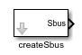
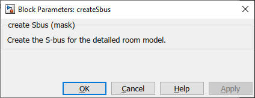

createSbus
Path: CARNOT/Basic/Heat_Transfer
Purpose
Create the S-bus for the
detailed room model.
Description
Elements used for calculation in the room node :
QdotConvection : thermal power in W to the convective room node ("room air
temperature node")
QdotRadiation : thermal power in W to the radiative room node ("radiative room
temperature node")
Elements used for information and analysis of the energy flow.
QdotSolar : entering solar radiation transformed in thermal power in W
QdotEquip : thermal power added by equipment in W (e.g. computers)
QdotLight : thermal power in W added by lighting equipment in W (e.g. lamps)
QdotPersons : thermal power in W added by persons
QdotHeating : thermal power in W added by heating elements (radiator, floor
heating, ...), positive values for heating, negative values for cooling
QdotAirExchange : thermal power in W added by air exchange (open windows and
ventilation sytem) positive values for heating, negative values for cooling
Warning: All elements are not considered in the energy balance of the room node. They have to be added to QdotConvection and/or QdotRadiation !
Outputs
Parameters and Dialog Box

Characteristics
Direct Feedthrough Yes
Sample
time
Inherited from
model
Vectorized
No